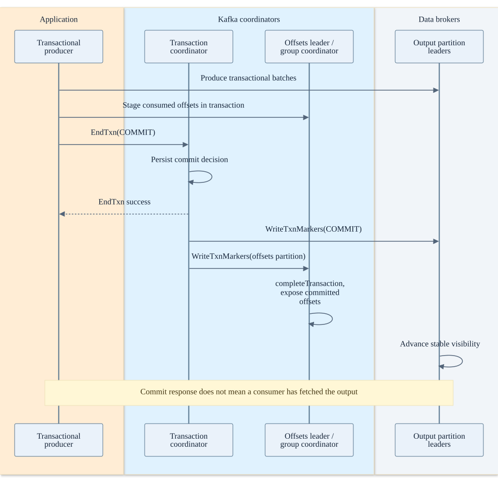

Chapter 02 · source-backed walkthrough
Kafka: transactions and failure recovery
Idempotent production handles retry duplicates in a producer sequence context. Transactions bind participating Kafka output records and progress into a commit decision. Replication, producer fencing and coordinator recovery make that decision survive process changes under their configured durability assumptions.
Before the detail
The mental model
Idempotence recognizes a producer retry. A transaction couples a set of Kafka writes and supported progress records to one outcome.
Worked example: connect the system view to the code
Worker W writes output for input 104 and includes next offset 105 in the same Kafka transaction. Abort hides that output from read_committed and does not advance the committed input bookmark. A fresh business send after a successful commit is different work to Kafka.
- Enroll input progress
StreamsProducer passes consumed offsets into its producer transaction.
- Decide
TransactionCoordinator processes EndTxn and persists the decision.
- Apply at participants
KafkaApis handles markers at participant leaders.
Illustrative reasoning example using this chapter's source scope; not a recorded deployment or executed experiment.
Does retrying a business event with a new producer identity deduplicate it?
No. Producer protocol retry protection is not a durable business-event uniqueness constraint.
Choose a reading path · Terms and progress boundaries · Clarity review
01
Transaction participants and the commit decision
The producer identity and epoch fence obsolete producers. Each affected partition leader tracks producer sequence and transactional batches. The transaction coordinator records the participating partitions and durable transaction state. A read-process-write application can add consumed group offsets to the transaction.
StreamsProducer explicitly calls sendOffsetsToTransaction before commitTransaction. At the wire layer this involves coordinator requests, transactional offset commit and EndTxn; exact request combinations depend on the Kafka transaction protocol version. Do not assume that application-level API order implies one network packet.
The successful EndTxn response and immediate consumer visibility are different events. Transaction markers must reach affected partitions and stable offsets must advance. read_committed fetches then return committed data and exclude aborted records.
Read-process-write inside Kafka
Simplified protocol chronology. Marker fan-out includes participating output and offset state; version-specific optimizations are omitted.

02
Timeouts and fencing
A timeout means the caller did not learn the outcome in time. The broker may already have appended the batch or committed a transaction. Blindly treating every timeout as a definitive abort can duplicate work or delete files that are already referenced by a commit.
An idempotent retry reuses protocol identity and sequence context so the leader can recognize a duplicate batch. It is not business-key deduplication across unrelated producer sessions or arbitrary repeated application sends. A stable event_id plus sink-side uniqueness is required when the application can independently reissue the same business event.
After ownership changes, an old process can remain alive behind a partitioned network. Fencing uses epochs or tokens to reject its writes / commits. A lease timeout detects suspicion; the storage authority must still enforce the new ownership token to prevent stale writers.
A timeout is an unknown outcome until reconciled
This is a general distributed write decision tree. Kafka producer retries and transaction state resolve it within Kafka; external sinks need their own protocol.

| Failure | Recovery authority | Availability / durability consequence |
|---|---|---|
| Leader fails after ack=1 but before replication | Replica logs and leader-election policy | A new leader may lack the record; client success did not promise all-replica durability. |
| ISR drops below required minimum | Partition leader checks min ISR | acks=all writes fail rather than accepting under-replicated writes. |
| Controller majority unavailable | KRaft metadata log | Metadata changes and elections lose progress. Existing data leaders may continue serving for a time; do not equate this with immediate loss of all reads. |
| Transaction coordinator fails | __transaction_state partition recovery | Decision processing pauses during coordinator recovery; incomplete transactions can hold stable visibility. |
| Producer loses commit reply | Transaction state and producer epoch | Recover according to producer API error state; ambiguous errors are not proof of abort. |
| Old owner continues running | Epoch / fencing checks | Reject stale producer commits; restart / reassign the task instead of ignoring fencing. |
03
Storage durability and retention
Replication tolerates a configured class of replica failures; it is not a backup against all replicas being lost, operator deletion, retention expiry, or a faulty application writing incorrect data. Log segments, indexes, producer snapshots and coordinator state have distinct maintenance roles.
An engine can recover only while required source records and checkpoint / changelog state remain available. Kafka retention shorter than the worst recovery lag can make a previously valid checkpoint unusable. Topic compaction preserves latest keys for state reconstruction; it does not retain a complete immutable history of every update forever.
There is an availability choice at each boundary: reject a write when durability preconditions fail, or accept it under weaker guarantees. It is more precise to name the failure and affected operation than to label an entire product simply CP or AP.
Inside the implementation
These excerpts come directly from the code paths used above. Expand a component to move from the system view into its implementation.
streams-commit StreamsProducer.java:242
Consumed offsets are added to the output producer transaction before commit.
Kafka/streams/src/main/java/org/apache/kafka/streams/processor/internals/StreamsProducer.java · d2da6a18f839
241 */
242 public void commitTransaction(final Map<TopicPartition, OffsetAndMetadata> offsets,
243 final ConsumerGroupMetadata consumerGroupMetadata) {
244 if (!eosEnabled()) {
245 throw new IllegalStateException(formatException("Exactly-once is not enabled"));
246 }
247 maybeBeginTransaction();
248 try {
249 producer.sendOffsetsToTransaction(offsets, consumerGroupMetadata);
250 } catch (final ProducerFencedException | InvalidProducerEpochException | CommitFailedException | InvalidPidMappingException error) {
251 throw new TaskMigratedException(
252 formatException("Producer got fenced trying to add offsets to a transaction"),
253 error
254 );
255 } catch (final TimeoutException timeoutException) {Test source inspected or located, not executed: StreamsProducerTest.java
kafka-txn TransactionCoordinator.scala:516
Transaction decision and marker dispatch.
Kafka/core/src/main/scala/kafka/coordinator/transaction/TransactionCoordinator.scala · d2da6a18f839
515
516 def handleEndTransaction(transactionalId: String,
517 producerId: Long,
518 producerEpoch: Short,
519 txnMarkerResult: TransactionResult,
520 clientTransactionVersion: TransactionVersion,
521 responseCallback: EndTxnCallback,
522 requestLocal: RequestLocal = RequestLocal.noCaching): Unit = {
523 endTransaction(transactionalId,
524 producerId,
525 producerEpoch,
526 txnMarkerResult,
527 isFromClient = true,
528 clientTransactionVersion,
529 responseCallback,kafka-markers KafkaApis.scala:1834
WriteTxnMarkers for the offsets topic delegates completion to the group coordinator; data partitions append control records.
Kafka/core/src/main/scala/kafka/server/KafkaApis.scala · d2da6a18f839
1833 if (partition.topic == GROUP_METADATA_TOPIC_NAME) {
1834 groupCoordinator.completeTransaction(
1835 partition,
1836 marker.producerId,
1837 marker.producerEpoch,
1838 marker.coordinatorEpoch,
1839 marker.transactionResult,
1840 markerTransactionVersion
1841 ).whenComplete { (_, exception) =>
1842 val error = if (exception == null) {
1843 Errors.NONE
1844 } else {
1845 Errors.forException(exception) match {
1846 case Errors.COORDINATOR_NOT_AVAILABLE | Errors.COORDINATOR_LOAD_IN_PROGRESS | Errors.NOT_COORDINATOR =>
1847 // The transaction coordinator does not expect those errors so we translate themkafka-partition Partition.scala:1219
Minimum ISR is checked for acks=-1 before append.
Kafka/core/src/main/scala/kafka/cluster/Partition.scala · d2da6a18f839
1218
1219 def appendRecordsToLeader(
1220 records: MemoryRecords,
1221 origin: AppendOrigin,
1222 requiredAcks: Int,
1223 requestLocal: RequestLocal,
1224 verificationGuard: VerificationGuard = VerificationGuard.SENTINEL,
1225 transactionVersion: Short = TransactionVersion.TV_UNKNOWN
1226 ): LogAppendInfo = {
1227 val (info, leaderHWIncremented) = inReadLock(leaderIsrUpdateLock, () => {
1228 leaderLogIfLocal match {
1229 case Some(leaderLog) =>
1230 val minIsr = effectiveMinIsr(leaderLog)
1231 val inSyncSize = partitionState.isr.size
1232 Test source inspected or located, not executed: PartitionTest.scala
kafka-controller QuorumController.java:176
Metadata controller event loop and quorum-backed metadata changes.
Kafka/metadata/src/main/java/org/apache/kafka/controller/QuorumController.java · d2da6a18f839
175 */
176 public final class QuorumController implements Controller {
177 /**
178 * The default maximum records that the controller will write in a single batch.
179 */
180 private static final int DEFAULT_MAX_RECORDS_PER_BATCH = 10000;
181
182 /**
183 * The maximum records any user-initiated operation is allowed to generate.
184 *
185 * For now, this is set to the maximum records in a single batch.
186 */
187 static final int MAX_RECORDS_PER_USER_OP = DEFAULT_MAX_RECORDS_PER_BATCH;
188
189 /**kafka-txn-state TransactionStateManager.scala:70
Transaction coordinator state is persisted in Kafka.
Kafka/core/src/main/scala/kafka/coordinator/transaction/TransactionStateManager.scala · d2da6a18f839
69 */
70 class TransactionStateManager(brokerId: Int,
71 scheduler: Scheduler,
72 replicaManager: ReplicaManager,
73 metadataCache: MetadataCache,
74 config: TransactionConfig,
75 time: Time,
76 metrics: Metrics) extends Logging {
77
78 this.logIdent = "[Transaction State Manager " + brokerId + "]: "
79
80 private type SendTxnMarkersCallback = (Int, TransactionResult, TransactionMetadata, TxnTransitMetadata) => Unit
81
82 /** shutting down flag */
83 private val shuttingDown = new AtomicBoolean(false)streams-restore StoreChangelogReader.java:71
Restoration and standby changelog consumption.
Kafka/streams/src/main/java/org/apache/kafka/streams/processor/internals/StoreChangelogReader.java · d2da6a18f839
70 */
71 public class StoreChangelogReader implements ChangelogReader {
72 private static final long RESTORE_LOG_INTERVAL_MS = 10_000L;
73 private long lastRestoreLogTime = 0L;
74
75 enum ChangelogState {
76 // registered but need to be initialized (i.e. set its starting, end, limit offsets)
77 REGISTERED("REGISTERED"),
78
79 // initialized and restoring
80 RESTORING("RESTORING", 0),
81
82 // completed restoring (only for active restoring task, standby task should never be completed)
83 COMPLETED("COMPLETED", 1);
84 Test source inspected or located, not executed: StoreChangelogReaderTest.java